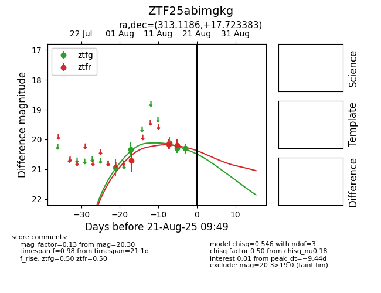

Target ZTF25abimgkg at 2025-08-21 09:49, see:
FINK: fink-portal.org/ZTF25abimgkg
Lasair: lasair-ztf.lsst.ac.uk/objects/ZTF25abimgkg
ALeRCE: alerce.online/object/ZTF25abimgkg
alt names
ZTF25abimgkg (ztf,alerce)
coordinates:
equatorial (ra, dec) = (313.1186,+17.72338)
galactic (l, b) = (63.6979,-16.76089)
photometry
last ztfg=20.30, ztfr=20.19
5 ztfg, 3 ztfr detections
